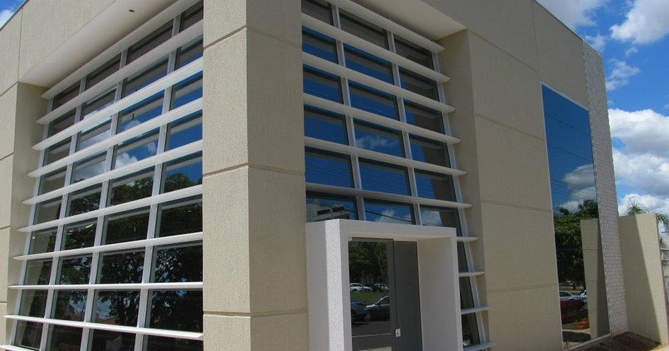

A Medical Clinic iniciou suas atividades no ano de 2012 na cidade de Sorocaba.Com custo acessível realizamos um trabalho sério e com muita dedicação. A Nossa Clínica oferece atendimento em diversas especialidades, exames laboratoriais e de imagem. É perfeita para quem não tem plano de saúde e até mesmo para os usuários dos convênios, que preferem ser atendidos com agilidade e rapidez, do que esperar mais de um mês para conseguir horário com um médico especialista.
Localizado próximo ao centro da cidade, trata-se de uma clínica médica humanizada, portadora de cadeira de rodas para melhor locomoção e elevador, se necessário. Contamos com salas especializadas para cada profissional e aparelhos necessários, oferecendo maior comodidade e melhor atendimento ao paciente.
Confira em nosso site especialidades, valores e horários
